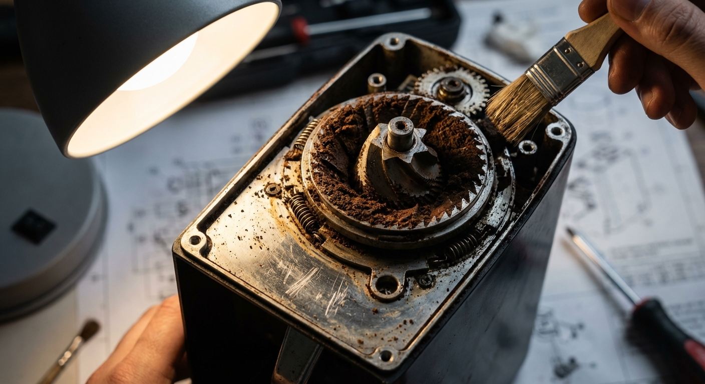

<!DOCTYPE html>
<html lang="de">
<head>
  <meta charset="UTF-8" />
  <meta name="viewport" content="width=device-width, initial-scale=1.0" />
  <title>Lab 05 – Use Case: Kaffeevollautomat-Störungsmelder | INME</title>
  <link rel="preconnect" href="https://fonts.googleapis.com">
  <link href="https://fonts.googleapis.com/css2?family=Space+Grotesk:wght@400;500;600;700;800&display=swap" rel="stylesheet">
  <script src="https://unpkg.com/react@18/umd/react.production.min.js"></script>
  <script src="https://unpkg.com/react-dom@18/umd/react-dom.production.min.js"></script>
  <script src="https://unpkg.com/@babel/standalone/babel.min.js"></script>
  <style>
    :root {
      --primary: #B91C1C;
      --accent: #F59E0B;
      --dark: #1A1A1A;
      --light-bg: #FAFAFA;
      --primary-light: rgba(185,28,28,0.08);
    }
    *, *::before, *::after { box-sizing: border-box; }
    body { background: #FAFAFA; font-family: -apple-system, BlinkMacSystemFont, 'Segoe UI', sans-serif; margin: 0; color: #1A1A1A; }
    h2 { color: #B91C1C; font-weight: 800; font-family: 'Space Grotesk', sans-serif; margin-top: 0; }
    h3 { color: #B91C1C; font-weight: 700; font-family: 'Space Grotesk', sans-serif; }
    h4 { font-family: 'Space Grotesk', sans-serif; font-weight: 600; margin: 0.5rem 0; }
    p { line-height: 1.7; }

    /* Bauhaus */
    .bauhaus-card { border: 2px solid #1A1A1A; border-radius: 0; padding: 1.5rem; background: white; }
    .bauhaus-accent-line { width: 48px; height: 4px; background: #F59E0B; margin: 0.5rem 0 1rem 0; }
    .bauhaus-badge { background: linear-gradient(135deg, #4F46E5 0%, #7C3AED 100%); color: white; padding: 0.2rem 0.7rem; font-size: 0.7rem; font-weight: 700; letter-spacing: 0.1em; text-transform: uppercase; border-radius: 0; display: inline-block; }
    .phase-badge { padding: 0.3rem 0.8rem; font-size: 0.75rem; font-weight: 700; border-radius: 0; text-transform: uppercase; display: inline-block; margin-bottom: 1rem; }

    /* Code */
    .code-block { background: linear-gradient(135deg, #4F46E5 0%, #7C3AED 100%); color: #e5e7eb; padding: 1.25rem; border-left: 4px solid #F59E0B; font-family: monospace; font-size: 0.85rem; overflow-x: auto; position: relative; white-space: pre; border-radius: 0; }
    .copy-btn { position: absolute; top: 0.5rem; right: 0.5rem; background: #F59E0B; color: #1A1A1A; border: none; padding: 0.25rem 0.6rem; font-size: 0.75rem; font-weight: 700; cursor: pointer; border-radius: 0; }
    .copy-btn:hover { background: #D97706; }

    /* Info boxes */
    .tip-box { border-left: 4px solid #F59E0B; background: #fffbeb; padding: 1rem 1.25rem; margin: 1rem 0; }
    .info-box { border-left: 4px solid #3b82f6; background: #eff6ff; padding: 1rem 1.25rem; margin: 1rem 0; }
    .concept-box { border-left: 4px solid #B91C1C; background: rgba(185,28,28,0.08); padding: 1rem 1.25rem; margin: 1rem 0; }
    .challenge-box { border-left: 4px solid #22c55e; background: #f0fdf4; padding: 1rem 1.25rem; margin: 1rem 0; }

    /* Quiz */
    .quiz-option { display: block; width: 100%; text-align: left; padding: 0.75rem 1rem; margin: 0.4rem 0; border: 2px solid #e5e7eb; border-radius: 0; background: white; cursor: pointer; font-size: 0.95rem; transition: border-color 0.15s, background 0.15s; }
    .quiz-option:hover:not(:disabled) { border-color: #B91C1C; background: rgba(185,28,28,0.04); }
    .quiz-option.correct { border-color: #22c55e; background: #f0fdf4; color: #166534; font-weight: 600; }
    .quiz-option.wrong { border-color: #ef4444; background: #fef2f2; color: #991b1b; }
    .quiz-option:disabled { cursor: default; }

    /* Layout */
    .header {
      position: fixed; top: 0; left: 0; right: 0; height: 56px; z-index: 100;
      background: white; border-bottom: 1px solid #E5E7EB; box-shadow: 0 1px 8px rgba(0,0,0,0.05);
      display: flex; align-items: center; justify-content: space-between;
      padding: 0 1.5rem;
    }
    .header-left { display: flex; align-items: center; gap: 1.5rem; }
    .header-logo { font-family: 'Space Grotesk', sans-serif; font-weight: 800; font-size: 1.1rem; color: #B91C1C; text-decoration: none; }
    .header-back { font-size: 0.85rem; color: #555; text-decoration: none; font-weight: 500; }
    .header-back:hover { color: #B91C1C; }
    .lang-btn { border: 2px solid #1A1A1A; background: white; padding: 0.2rem 0.6rem; font-size: 0.78rem; font-weight: 700; cursor: pointer; border-radius: 0; letter-spacing: 0.05em; }
    .lang-btn.active { background: linear-gradient(135deg, #4F46E5 0%, #7C3AED 100%); color: white; }
    .lang-btn:hover:not(.active) { background: #f5f5f5; }

    .sidebar {
      position: fixed; top: 56px; left: 0; width: 260px;
      height: calc(100vh - 56px); overflow-y: auto;
      border-right: 1px solid #E5E7EB; background: white;
      padding: 1.5rem 0;
    }
    .sidebar-title { font-family: 'Space Grotesk', sans-serif; font-size: 0.7rem; font-weight: 700; text-transform: uppercase; letter-spacing: 0.12em; color: #888; padding: 0 1.25rem; margin-bottom: 0.75rem; }
    .sidebar-link {
      display: block; padding: 0.55rem 1.25rem; font-size: 0.88rem; color: #444;
      text-decoration: none; border-left: 3px solid transparent;
      transition: background 0.12s, color 0.12s, border-color 0.12s;
      font-weight: 500;
    }
    .sidebar-link:hover { color: #B91C1C; background: rgba(185,28,28,0.04); }
    .sidebar-link.active { color: #B91C1C; border-left-color: #B91C1C; background: rgba(185,28,28,0.06); font-weight: 700; }

    .main-content {
      margin-left: 260px; padding-top: 72px; padding-bottom: 4rem;
      padding-left: 3rem; padding-right: 3rem; max-width: 960px;
    }

    .section-block { margin-bottom: 4rem; }

    /* Tables */
    table { width: 100%; border-collapse: collapse; margin: 1rem 0; font-size: 0.9rem; }
    th { background: linear-gradient(135deg, #4F46E5 0%, #7C3AED 100%); color: white; padding: 0.65rem 1rem; text-align: left; font-family: 'Space Grotesk', sans-serif; font-weight: 600; font-size: 0.82rem; letter-spacing: 0.05em; }
    td { padding: 0.6rem 1rem; border-bottom: 1px solid #e5e7eb; }
    tr:nth-child(even) td { background: #f9fafb; }
    tr:hover td { background: rgba(185,28,28,0.03); }

    /* Nav bottom */
    .nav-bottom { display: flex; gap: 1rem; flex-wrap: wrap; margin-top: 2rem; }
    .nav-btn { border: 2px solid #1A1A1A; background: white; padding: 0.65rem 1.25rem; font-size: 0.9rem; font-weight: 700; cursor: pointer; text-decoration: none; color: #1A1A1A; font-family: 'Space Grotesk', sans-serif; display: inline-block; border-radius: 0; }
    .nav-btn:hover { background: linear-gradient(135deg, #4F46E5 0%, #7C3AED 100%); color: white; }
    .nav-btn.primary { background: #B91C1C; border-color: #B91C1C; color: white; }
    .nav-btn.primary:hover { background: #991b1b; border-color: #991b1b; }

    /* Quiz section */
    .quiz-question-block { margin-bottom: 2rem; padding: 1.5rem; border: 2px solid #e5e7eb; background: white; }
    .quiz-question-block h4 { margin: 0 0 1rem; font-size: 1rem; line-height: 1.5; }
    .quiz-explanation { margin-top: 0.75rem; padding: 0.75rem 1rem; background: #f0fdf4; border-left: 3px solid #22c55e; font-size: 0.88rem; color: #166534; }
    .quiz-explanation.wrong-exp { background: #fef2f2; border-left-color: #ef4444; color: #991b1b; }
    .score-display { font-family: 'Space Grotesk', sans-serif; font-size: 1.2rem; font-weight: 700; margin: 1.5rem 0 1rem; color: #1A1A1A; }

    /* Hero section */
    .hero-section { background: linear-gradient(135deg, #4F46E5 0%, #7C3AED 100%); color: white; padding: 2.5rem; margin-bottom: 2rem; }
    .hero-section h2 { color: #F59E0B; font-size: 2rem; margin: 0.75rem 0 0.5rem; }
    .hero-section p { color: #d1d5db; line-height: 1.7; margin: 0.5rem 0 1.5rem; }
    .stat-badges { display: flex; gap: 1rem; flex-wrap: wrap; }
    .stat-badge { background: rgba(245,158,11,0.15); border: 1px solid #F59E0B; color: #F59E0B; padding: 0.4rem 1rem; font-size: 0.8rem; font-weight: 700; letter-spacing: 0.08em; text-transform: uppercase; }

    /* Störungen table expand */
    .expand-btn { background: none; border: 2px solid #1A1A1A; padding: 0.5rem 1.25rem; font-size: 0.88rem; font-weight: 700; cursor: pointer; border-radius: 0; font-family: 'Space Grotesk', sans-serif; margin: 0.75rem 0; }
    .expand-btn:hover { background: linear-gradient(135deg, #4F46E5 0%, #7C3AED 100%); color: white; }

    /* Empathy Map */
    .empathy-grid { display: grid; grid-template-columns: 1fr 1fr; border: 2px solid #1A1A1A; margin: 1.5rem 0; }
    .empathy-cell { padding: 1.25rem; }
    .empathy-cell:nth-child(1) { border-right: 1px solid #1A1A1A; border-bottom: 1px solid #1A1A1A; }
    .empathy-cell:nth-child(2) { border-bottom: 1px solid #1A1A1A; }
    .empathy-cell:nth-child(3) { border-right: 1px solid #1A1A1A; }
    .empathy-label { font-family: 'Space Grotesk', sans-serif; font-weight: 800; font-size: 0.75rem; text-transform: uppercase; letter-spacing: 0.12em; color: #B91C1C; margin-bottom: 0.75rem; }
    .empathy-footer { background: linear-gradient(135deg, #4F46E5 0%, #7C3AED 100%); color: white; text-align: center; padding: 0.6rem; font-family: 'Space Grotesk', sans-serif; font-weight: 700; font-size: 0.85rem; grid-column: 1 / -1; }

    /* Crazy 8s grid */
    .crazy8-grid { display: grid; grid-template-columns: repeat(auto-fill, minmax(200px, 1fr)); gap: 1rem; margin: 1.5rem 0; }
    .crazy8-card { border: 2px solid #e5e7eb; padding: 1rem; background: white; }
    .crazy8-card.selected { border-color: #22c55e; background: #f0fdf4; }
    .crazy8-num { font-family: 'Space Grotesk', sans-serif; font-weight: 800; font-size: 1.5rem; color: #e5e7eb; line-height: 1; }
    .crazy8-card.selected .crazy8-num { color: #22c55e; }
    .crazy8-title { font-weight: 700; font-size: 0.9rem; margin: 0.25rem 0; }
    .crazy8-desc { font-size: 0.8rem; color: #666; line-height: 1.4; }

    /* App flow */
    .app-flow { display: grid; grid-template-columns: repeat(4, 1fr); gap: 0; margin: 1.5rem 0; border: 2px solid #1A1A1A; }
    .flow-screen { padding: 1rem; border-right: 1px solid #e5e7eb; position: relative; }
    .flow-screen:last-child { border-right: none; }
    .flow-num { font-family: 'Space Grotesk', sans-serif; font-weight: 800; font-size: 1.5rem; color: #e5e7eb; }
    .flow-title { font-weight: 700; font-size: 0.9rem; color: #1A1A1A; margin: 0.25rem 0; }
    .flow-desc { font-size: 0.78rem; color: #666; }
    .flow-arrow { position: absolute; right: -12px; top: 50%; transform: translateY(-50%); background: #F59E0B; color: #1A1A1A; width: 22px; height: 22px; display: flex; align-items: center; justify-content: center; font-weight: 700; font-size: 0.75rem; z-index: 1; }

    /* Design decisions */
    .design-grid { display: grid; grid-template-columns: 1fr 1fr; gap: 1rem; margin: 1.5rem 0; }
    .design-card { border: 2px solid #e5e7eb; padding: 1.25rem; background: white; }
    .design-card h4 { color: #1A1A1A; margin: 0 0 0.5rem; font-size: 0.95rem; }
    .design-card .usage { font-size: 0.82rem; color: #555; margin: 0.25rem 0; }
    .design-card .reason { font-size: 0.82rem; color: #888; font-style: italic; }
    .color-swatch { width: 32px; height: 32px; display: inline-block; border: 2px solid #1A1A1A; margin-right: 0.5rem; vertical-align: middle; }

    /* Screen cards */
    .screen-card { border: 2px solid #1A1A1A; margin-bottom: 1.25rem; }
    .screen-header { background: linear-gradient(135deg, #4F46E5 0%, #7C3AED 100%); color: white; padding: 0.65rem 1.25rem; display: flex; align-items: center; gap: 0.75rem; }
    .screen-num { font-family: 'Space Grotesk', sans-serif; font-weight: 800; font-size: 1.1rem; color: #F59E0B; }
    .screen-title { font-family: 'Space Grotesk', sans-serif; font-weight: 700; font-size: 0.95rem; }
    .screen-body { padding: 1.25rem; }
    .screen-elements { list-style: none; padding: 0; margin: 0.75rem 0 0; }
    .screen-elements li { padding: 0.3rem 0; border-bottom: 1px solid #f0f0f0; font-size: 0.88rem; display: flex; gap: 0.5rem; }
    .screen-elements li:last-child { border-bottom: none; }
    .screen-elements li::before { content: "▸"; color: #B91C1C; font-size: 0.75rem; margin-top: 0.2rem; flex-shrink: 0; }

    /* Progress tracker */
    .progress-list { list-style: none; padding: 0; margin: 1.5rem 0; }
    .progress-item { display: flex; align-items: flex-start; gap: 1rem; padding: 0.85rem 1rem; border-bottom: 1px solid #e5e7eb; }
    .progress-item:last-child { border-bottom: none; }
    .progress-icon { font-size: 1.2rem; flex-shrink: 0; margin-top: 0.1rem; }
    .progress-text { font-size: 0.92rem; line-height: 1.5; }
    .progress-text strong { color: #1A1A1A; }

    /* HMW items */
    .hmw-list { list-style: none; padding: 0; margin: 1rem 0; }
    .hmw-item { border-left: 4px solid #3b82f6; background: #eff6ff; padding: 0.85rem 1.25rem; margin-bottom: 0.75rem; font-size: 0.95rem; }

    /* Pain points */
    .pain-grid { display: grid; grid-template-columns: repeat(auto-fill, minmax(220px, 1fr)); gap: 1rem; margin: 1.5rem 0; }
    .pain-card { border: 2px solid #e5e7eb; padding: 1.25rem; background: white; border-top: 3px solid #B91C1C; }
    .pain-icon { font-size: 1.5rem; margin-bottom: 0.5rem; }
    .pain-title { font-weight: 700; font-size: 0.92rem; color: #1A1A1A; margin-bottom: 0.3rem; }
    .pain-desc { font-size: 0.83rem; color: #666; }

    /* Persona */
    .persona-card { border: 2px solid #1A1A1A; display: grid; grid-template-columns: 180px 1fr; gap: 0; }
    .persona-avatar-col { background: linear-gradient(135deg, #4F46E5 0%, #7C3AED 100%); display: flex; flex-direction: column; align-items: center; justify-content: center; padding: 2rem 1rem; }
    .persona-avatar { width: 80px; height: 80px; background: #B91C1C; display: flex; align-items: center; justify-content: center; font-family: 'Space Grotesk', sans-serif; font-weight: 800; font-size: 1.8rem; color: white; margin-bottom: 1rem; }
    .persona-name { color: white; font-family: 'Space Grotesk', sans-serif; font-weight: 700; font-size: 0.95rem; text-align: center; }
    .persona-role { color: #9ca3af; font-size: 0.78rem; text-align: center; }
    .persona-content { padding: 1.5rem; }
    .persona-section { margin-bottom: 1rem; }
    .persona-section-label { font-family: 'Space Grotesk', sans-serif; font-weight: 700; font-size: 0.75rem; text-transform: uppercase; letter-spacing: 0.1em; color: #888; margin-bottom: 0.4rem; }
    .persona-quote { background: rgba(185,28,28,0.06); border-left: 3px solid #B91C1C; padding: 0.75rem 1rem; font-style: italic; font-size: 0.92rem; margin-top: 1rem; }

    /* Wireframe */
    .wireframe-container { background: linear-gradient(135deg, #4F46E5 0%, #7C3AED 100%); padding: 1.25rem; border-left: 4px solid #F59E0B; font-family: monospace; font-size: 0.82rem; color: #e5e7eb; overflow-x: auto; white-space: pre; position: relative; }

    /* Responsive */
    @media (max-width: 768px) {
      .sidebar { display: none; }
      .main-content { margin-left: 0; padding-left: 1.25rem; padding-right: 1.25rem; }
      .persona-card { grid-template-columns: 1fr; }
      .persona-avatar-col { padding: 1.5rem; flex-direction: row; gap: 1rem; }
      .app-flow { grid-template-columns: 1fr 1fr; }
      .design-grid { grid-template-columns: 1fr; }
      .empathy-grid { grid-template-columns: 1fr; }
      .empathy-cell:nth-child(1) { border-right: none; border-bottom: 1px solid #1A1A1A; }
      .empathy-cell:nth-child(3) { border-right: none; }
    }
  
    /* v2.0 Modern Upgrades */
    a { color: var(--primary); }
    button { transition: all 0.2s ease; }
    button:hover { opacity: 0.85; transform: translateY(-1px); }
    .sidebar-item { border-radius: 6px; margin: 2px 8px; }
    .code-block { border-radius: 8px; }
    .tip-box, .challenge-box, .info-box, .concept-box { border-radius: 8px; }
    img { border-radius: 8px; }

    </style>
  <script src="https://cdn.jsdelivr.net/npm/mermaid@10/dist/mermaid.min.js"></script>
  <script>mermaid.initialize({ startOnLoad: true, theme: 'base', themeVariables: { primaryColor: '#6366F1', primaryTextColor: '#1F2937', lineColor: '#6366F1', edgeLabelBackground: '#F9FAFB' }});</script>
</head>
<body>
  <div id="root"></div>

  <script type="text/babel">
    const { useState, useEffect, useRef } = React;

    // ─── Translations ─────────────────────────────────────────────────────────
    const T = {
      de: {
        pageTitle: 'Lab 05 – Use Case: Kaffeevollautomat-Störungsmelder',
        labLabel: 'INME Lab',
        backLink: '← Übersicht',
        nav: [
          { href: '#ueberblick',      label: 'Use Case Beschreibung' },
          { href: '#empathize',       label: 'Phase 1: Empathize' },
          { href: '#define',          label: 'Phase 2: Define' },
          { href: '#ideate',          label: 'Phase 3: Ideate' },
          { href: '#prototype-lofi',  label: 'Prototype – Lo-Fi' },
          { href: '#prototype-hifi',  label: 'Prototype – Hi-Fi' },
          { href: '#prototype-figma', label: 'Prototype – Figma' },
          { href: '#zusammenfassung', label: 'Zusammenfassung' },
          { href: '#quiz',            label: 'Quiz' },
        ],

        // Section 1
        s1BadgeLabel: 'USE CASE',
        s1Title: 'Kaffeevollautomat-Störungsmelder',
        s1Desc: 'Ein Industrie-Wartungstechniker meldet per Smartphone eine Störung eines Kaffeevollautomaten. Das System analysiert Foto + Symptome, liefert eine Diagnose und eine Schritt-für-Schritt-Reparaturanleitung. Bei Bedarf wird der Techniker zum Ersatzteilshop weitergeleitet.',
        s1Stats: ['4 Screens', '6 Ersatzteile', 'Bauhaus Design'],
        s1StoerungenTitle: 'Die 10 typischen Störungen',
        s1StoerungenBtn: 'Störungsliste anzeigen',
        s1StoerungenBtnHide: 'Störungsliste ausblenden',
        s1TableHeaders: ['#', 'Störung', 'Ursache', 'Lösung', 'Ersatzteil?'],
        s1Stoerungen: [
          ['1', 'E4/E5 – Entkalkung', 'Kalk in System', 'Entkalker-Programm', 'Entkalker ✓'],
          ['2', 'Mahlwerk mahlt nicht', 'Bohnen leer / Fremdkörper', 'Befüllen / Reinigen', 'Nein'],
          ['3', 'Kein Kaffee-Fluss', 'Brühgruppe verstopft', 'Brühgruppe reinigen', 'ggf. Brühgruppe'],
          ['4', 'Dampflanze defekt', 'Kalk im Ventil', 'Entkalken / Dichtung', 'Dampfventil'],
          ['5', 'Wassertank leer', 'Sensor defekt', 'Sensor prüfen', 'Sensor'],
          ['6', 'Kaffeesatz-Behälter voll', 'Automat stoppt', 'Tresterbehälter leeren', 'Nein'],
          ['7', 'Startet nicht', 'Sicherung / Strom', 'Sicherung prüfen', 'Nein'],
          ['8', 'Kaffeepulver in Tasse', 'Defektes Sieb', 'Sieb tauschen', 'Sieb ✓'],
          ['9', 'Ungewöhnliche Geräusche', 'Pumpe defekt', 'Pumpe tauschen', 'Pumpe ✓'],
          ['10', 'Display tot', 'Elektronik', 'Kundendienst', 'ggf. Elektronik'],
        ],

        // Section 2
        s2PhaseBadge: 'PHASE 1: EMPATHIZE',
        s2Title: 'Phase 1: Empathize',
        s2PersonaTitle: 'Persona: Thomas Wagner',
        s2PersonaAge: '34 Jahre, Wartungstechniker',
        s2PersonaGoalsLabel: 'Ziele',
        s2PersonaGoals: 'Schnelle Diagnose vor Ort, Störungen in < 30 Min beheben, Ersatzteile sofort parat haben, keine langen Recherchezeiten.',
        s2PersonaFrustLabel: 'Frustrationen',
        s2PersonaFrust: 'Handbücher unvollständig, Google-Ergebnisse veraltet, Bestellung über 3 verschiedene Webshops.',
        s2PersonaContextLabel: 'Kontext',
        s2PersonaContext: 'Wartet täglich 8–12 Kaffeemaschinen verschiedener Marken. Immer mit Smartphone unterwegs, kein Laptop.',
        s2PersonaQuote: '"Ich will die Lösung, nicht das Handbuch – in 2 Minuten, nicht in 20."',
        s2EmpathyTitle: 'Empathy Map',
        s2ImagesTitle: 'Typische Störungsbilder',
        s2PainPointsTitle: 'Pain Points',
        s2PainPoints: [
          { icon: '😤', title: 'Handbücher nicht dabei / unleserlich', desc: 'Papierdokumentation ist oft nicht vor Ort verfügbar oder schwer lesbar.' },
          { icon: '😤', title: 'Google-Suchergebnisse oft falsch', desc: 'Veraltete Anleitungen oder falsche Diagnosetipps kosten wertvolle Zeit.' },
          { icon: '😤', title: 'Ersatzteile aus 3 Webshops', desc: 'Kein einheitlicher Shop für alle Hersteller — zeitaufwendige Bestellprozesse.' },
        ],

        // Section 3
        s3PhaseBadge: 'PHASE 2: DEFINE',
        s3Title: 'Phase 2: Define',
        s3ProblemTitle: 'Problem Statement',
        s3Problem: 'Thomas, ein erfahrener Wartungstechniker, braucht eine schnelle, zuverlässige Möglichkeit, Kaffeemaschinen-Störungen vor Ort zu diagnostizieren und zu beheben, weil er täglich 8–12 Maschinen wartet und sich keine langen Handbuchrecherchen leisten kann.',
        s3HMWTitle: '"How Might We" – Fragen',
        s3HMW: [
          '💡 Wie könnten wir die Diagnosezeit einer Kaffeemaschinen-Störung auf unter 2 Minuten reduzieren?',
          '💡 Wie könnten wir Technikern ermöglichen, Ersatzteile direkt aus der Diagnose zu bestellen?',
          '💡 Wie könnten wir die Fehlerrate bei der Störungsdiagnose auf unter 5% senken?',
        ],

        // Section 4
        s4PhaseBadge: 'PHASE 3: IDEATE',
        s4Title: 'Phase 3: Ideate',
        s4Crazy8Title: 'Crazy 8s – Ergebnis',
        s4Ideas: [
          { num: '1', icon: '📷', title: 'Foto-Diagnose', desc: 'KI analysiert Foto der defekten Maschine automatisch' },
          { num: '2', icon: '🔢', title: 'Fehlercode-Scanner', desc: 'QR/Barcode am Gerät scannen → direkte Diagnose' },
          { num: '3', icon: '🗣️', title: 'Spracheingabe', desc: 'Sprachbefehl "E4 Fehler Jura" → Sofortdiagnose' },
          { num: '4', icon: '📋', title: 'Symptom-Checkliste', desc: 'Multiple-Choice statt Freitext → schnell + präzise', selected: true },
          { num: '5', icon: '🤖', title: 'Chatbot', desc: 'Konversationelle Diagnose via WhatsApp-ähnliches Interface' },
          { num: '6', icon: '📱', title: 'AR-Overlay', desc: 'Kamera zeigt Reparaturschritte direkt auf der Maschine' },
          { num: '7', icon: '🌐', title: 'Techniker-Forum', desc: 'Community-basierte Wissensdatenbank' },
          { num: '8', icon: '📧', title: 'Email-Diagnose', desc: 'Foto mailen → automatische Antwort' },
        ],
        s4KonvergenzTitle: 'Konvergenz – Entscheidung',
        s4Konvergenz: 'Nach Bewertung nach Aufwand/Nutzen haben wir Idee 4 (Symptom-Checkliste) gewählt, da sie ohne KI sofort implementierbar ist und Idee 1 (Foto) als Future Feature geplant.',
        s4ErweiterungTitle: 'Erweiterung für die App',
        s4Erweiterung: 'Kombination aus Idee 4 (Symptom-Checkliste als Kern) + Idee 1 (Foto-Upload als optionales Feature). So ist die App sofort nutzbar und erweiterbar.',

        // Section 5
        s5PhaseBadge: 'PHASE 4: PROTOTYPE – LO-FI',
        s5Title: 'Phase 4: Prototype – Lo-Fi',
        s5FlowTitle: 'App Flow – 4 Screens',
        s5Screens: [
          { title: 'Störung erfassen', desc: 'Foto + Checkboxen + Diagnose-Button' },
          { title: 'Diagnose anzeigen', desc: 'E4: Entkalker + Anleitung + Shop-Button' },
          { title: 'Shop öffnen', desc: 'Entkalker, Pumpe, Brühgruppe' },
          { title: 'Bestellung bestätigen', desc: 'Danke-Screen mit Bestätigung' },
        ],
        s5WireframeTitle: 'ASCII Wireframe – Screen 1',

        // Section 6
        s6PhaseBadge: 'PHASE 4: PROTOTYPE – HI-FI DESIGN',
        s6Title: 'Phase 4: Prototype – Hi-Fi Design',
        s6DesignTitle: 'Bauhaus-Designentscheidungen',
        s6Decisions: [
          {
            title: 'Primärfarbe Rot (#B91C1C)',
            swatch: '#B91C1C',
            usage: 'E4/E5 Fehlermeldungen, CTA "Diagnose starten", kritische Warnungen',
            reason: 'Universell als Warnung/Dringlichkeit verstanden, starker Kontrast auf Weiß',
          },
          {
            title: 'Akzentfarbe Gelb (#F59E0B)',
            swatch: '#F59E0B',
            usage: 'Hinweise (Entkalker nötig), moderate Warnungen',
            reason: 'Aufmerksamkeitsstark ohne Dringlichkeit wie Rot',
          },
          {
            title: 'Erfolgsfarbe Grün (#16A34A)',
            swatch: '#16A34A',
            usage: '"Störung behoben", Bestellbestätigung',
            reason: 'Universelles Signal für Erfolg / OK',
          },
          {
            title: 'Grid-System',
            swatch: null,
            usage: 'Mobile: 1-Spalte (320–480px) | Desktop: 4-Spalten, 24px Gap',
            reason: 'Mobile-first, da Techniker vorwiegend mit Smartphone arbeiten',
          },
          {
            title: 'Typografie',
            swatch: null,
            usage: 'Headlines: Space Grotesk 800 | Body: System Font',
            reason: 'Klare Hierarchie, Wiedererkennungswert, schnell geladen',
          },
          {
            title: 'Buttons: 0 border-radius',
            swatch: null,
            usage: 'Primär: Rot / Weiß | Sekundär: Outlined Schwarz',
            reason: 'Bauhaus-Prinzip: Klare, geometrische Formen, kein dekoratives Rundling',
          },
        ],

        // Section 7
        s7PhaseBadge: 'PHASE 4: FIGMA PROTOTYP',
        s7Title: 'Phase 4: Prototype – Figma',
        s7ScreensTitle: '4 Screens im Detail',
        s7FigmaNote: 'Figma-Link wird nach Fertigstellung des Hi-Fi Prototyps hier eingefügt.',
        s7Screens: [
          {
            num: '01',
            title: 'Störung erfassen',
            desc: 'Startscreen mit Eingabemaske für Foto-Upload, Maschinentyp-Auswahl und Symptome-Checkliste.',
            elements: [
              'Hero: App-Name "☕ Störungsmelder"',
              'Foto-Upload Button (groß, prominent, roter Rand)',
              'Dropdown: Maschinentyp (Jura, Siemens, DeLonghi, etc.)',
              'Checkbox-Gruppe: Symptome (E4/E5, Kein Kaffee, Geräusche, etc.)',
              'Primary CTA: "DIAGNOSE STARTEN" (rot, full-width, kein border-radius)',
            ],
          },
          {
            num: '02',
            title: 'Diagnose',
            desc: 'Diagnoseergebnis mit Ursache, Reparaturanleitung und Weiterleitung zum Shop.',
            elements: [
              'Störungsname (H1, rot, Space Grotesk)',
              'Ursache (concept-box, roter linker Rand)',
              'Schritt-für-Schritt Anleitung (nummerierte Liste)',
              'Info: "Ersatzteil benötigt?" mit Badge',
              'CTA: "ERSATZTEIL BESTELLEN" → Screen 3',
            ],
          },
          {
            num: '03',
            title: 'Ersatzteilshop',
            desc: 'Produktliste mit direkter Bestellmöglichkeit und Warenkorb.',
            elements: [
              'Produktliste (2 Produkte als Karten)',
              'Produktbild | Name | Preis | "In den Warenkorb" Button',
              'Warenkorb-Badge im Header',
              'CTA: "ZUR KASSE →"',
            ],
          },
          {
            num: '04',
            title: 'Bestellung bestätigt',
            desc: 'Erfolgsscreen nach abgeschlossener Bestellung.',
            elements: [
              'Großes grünes Checkmark (CSS, kein Icon-Font)',
              '"Bestellung erfolgreich!" (grün, Space Grotesk)',
              'Bestellnummer anzeigen',
              '"Lieferzeit: 2–3 Werktage"',
              '"Zurück zur Startseite" Link',
            ],
          },
        ],

        // Section 8
        s8Title: 'Zusammenfassung: Ready for Implementation',
        s8Subtitle: 'Von der Idee zur Implementierung',
        s8Progress: [
          { done: true,  text: 'Phase 1: Empathize – Persona Thomas, Empathy Map' },
          { done: true,  text: 'Phase 2: Define – Problem Statement, HMW-Fragen' },
          { done: true,  text: 'Phase 3: Ideate – Crazy 8s, Konvergenz auf App-Idee' },
          { done: true,  text: 'Phase 4: Lo-Fi Prototype – ASCII Wireframe, App Flow' },
          { done: true,  text: 'Phase 4: Hi-Fi Design – Bauhaus-Designsystem dokumentiert' },
          { done: true,  text: 'Phase 4: Figma – 4 Screens konzipiert' },
          { done: false, text: 'Phase 5: Test + Implementation → Lab 6' },
        ],
        s8ConceptText: 'Wir haben jetzt alles was wir brauchen: Eine validierte Idee, eine definierte Zielgruppe, ein klares Design-System und 4 Screens. Zeit zum Bauen!',

        // Quiz
        quizTitle: 'Quiz',
        quizScore: (c, t) => `Ergebnis: ${c} von ${t} richtig`,
        quizRetry: 'Nochmal versuchen',
        quizQuestions: [
          {
            q: 'Was ist der erste Schritt im Design Thinking Prozess?',
            opts: ['Ideate', 'Prototype', 'Empathize', 'Define'],
            correct: 2,
            explanation: 'Empathize ist immer der erste Schritt: Verstehe den Nutzer, bevor du definierst, ideierst oder baust.',
          },
          {
            q: 'Was ist ein "Problem Statement" im Design Thinking?',
            opts: [
              'Eine technische Fehlerbeschreibung',
              'Eine konkrete, nutzerzentrierte Formulierung des Kernproblems',
              'Ein juristisches Dokument',
              'Eine Liste von User Stories',
            ],
            correct: 1,
            explanation: 'Ein Problem Statement fasst das Kernproblem aus Nutzersicht konkret zusammen und lenkt alle weiteren Design-Entscheidungen.',
          },
          {
            q: 'Was ist die Crazy 8s Methode?',
            opts: [
              '8 Nutzer gleichzeitig testen',
              '8 Prototypen in 8 Wochen bauen',
              '8 Ideen in 8 Minuten skizzieren',
              '8 Iterationen in 8 Tagen',
            ],
            correct: 2,
            explanation: 'Crazy 8s ist eine Ideation-Technik: Man skizziert 8 verschiedene Ideen in jeweils 1 Minute (8 Minuten gesamt).',
          },
          {
            q: 'Warum verwenden wir Rot (#B91C1C) für Fehlermeldungen in unserer App?',
            opts: [
              'Weil es unsere Lieblingsfarbe ist',
              'Weil es universell als Warnung/Dringlichkeit verstanden wird und starken Kontrast bietet',
              'Weil es am günstigsten zu produzieren ist',
              'Weil es das Firmenlogo zeigt',
            ],
            correct: 1,
            explanation: 'Rot signalisiert kulturübergreifend Gefahr und Dringlichkeit. Der hohe Kontrast auf weißem Hintergrund sorgt zudem für gute Lesbarkeit (Barrierefreiheit).',
          },
          {
            q: 'Wie viele Screens hat unser Kaffeemaschinen-Prototyp?',
            opts: ['2', '3', '4', '6'],
            correct: 2,
            explanation: 'Der Prototyp hat 4 Screens: (1) Störung erfassen, (2) Diagnose, (3) Ersatzteilshop, (4) Bestellung bestätigt.',
          },
        ],

        // Nav
        navPrev: '← Lab 04: UX Research',
        navNext: 'Weiter: Lab 06 – Implementierung →',
      },

      en: {
        pageTitle: 'Lab 05 – Use Case: Coffee Machine Fault Reporter',
        labLabel: 'INME Lab',
        backLink: '← Overview',
        nav: [
          { href: '#ueberblick',      label: 'Use Case Description' },
          { href: '#empathize',       label: 'Phase 1: Empathize' },
          { href: '#define',          label: 'Phase 2: Define' },
          { href: '#ideate',          label: 'Phase 3: Ideate' },
          { href: '#prototype-lofi',  label: 'Prototype – Lo-Fi' },
          { href: '#prototype-hifi',  label: 'Prototype – Hi-Fi' },
          { href: '#prototype-figma', label: 'Prototype – Figma' },
          { href: '#zusammenfassung', label: 'Summary' },
          { href: '#quiz',            label: 'Quiz' },
        ],

        s1BadgeLabel: 'USE CASE',
        s1Title: 'Coffee Machine Fault Reporter',
        s1Desc: 'An industrial maintenance technician reports a coffee machine fault via smartphone. The system analyses the photo + symptoms, delivers a diagnosis and a step-by-step repair guide. If needed, the technician is redirected to the spare-parts shop.',
        s1Stats: ['4 Screens', '6 Spare Parts', 'Bauhaus Design'],
        s1StoerungenTitle: 'The 10 Common Faults',
        s1StoerungenBtn: 'Show fault list',
        s1StoerungenBtnHide: 'Hide fault list',
        s1TableHeaders: ['#', 'Fault', 'Cause', 'Solution', 'Part needed?'],
        s1Stoerungen: [
          ['1', 'E4/E5 – Descaling', 'Scale in system', 'Run descaler programme', 'Descaler ✓'],
          ['2', 'Grinder not grinding', 'Empty beans / foreign object', 'Refill / clean', 'No'],
          ['3', 'No coffee flow', 'Brew group clogged', 'Clean brew group', 'Maybe brew group'],
          ['4', 'Steam wand defective', 'Scale in valve', 'Descale / seal', 'Steam valve'],
          ['5', 'Water tank empty', 'Sensor defective', 'Check sensor', 'Sensor'],
          ['6', 'Grounds container full', 'Machine stops', 'Empty grounds tray', 'No'],
          ['7', 'Does not start', 'Fuse / power', 'Check fuse', 'No'],
          ['8', 'Coffee grounds in cup', 'Defective filter', 'Replace filter', 'Filter ✓'],
          ['9', 'Unusual noises', 'Pump defective', 'Replace pump', 'Pump ✓'],
          ['10', 'Display dead', 'Electronics', 'Customer service', 'Maybe electronics'],
        ],

        s2PhaseBadge: 'PHASE 1: EMPATHIZE',
        s2Title: 'Phase 1: Empathize',
        s2PersonaTitle: 'Persona: Thomas Wagner',
        s2PersonaAge: '34 years, Maintenance Technician',
        s2PersonaGoalsLabel: 'Goals',
        s2PersonaGoals: 'Quick on-site diagnosis, fix faults in < 30 min, have spare parts ready, no long research times.',
        s2PersonaFrustLabel: 'Frustrations',
        s2PersonaFrust: 'Incomplete manuals, outdated Google results, ordering from 3 different web shops.',
        s2PersonaContextLabel: 'Context',
        s2PersonaContext: 'Services 8–12 coffee machines of various brands daily. Always on smartphone, no laptop.',
        s2PersonaQuote: '"I want the solution, not the manual – in 2 minutes, not 20."',
        s2EmpathyTitle: 'Empathy Map',
        s2ImagesTitle: 'Typical Fault Images',
        s2PainPointsTitle: 'Pain Points',
        s2PainPoints: [
          { icon: '😤', title: 'Manuals unavailable / illegible', desc: 'Paper documentation is often not on-site or hard to read.' },
          { icon: '😤', title: 'Google results often wrong', desc: 'Outdated instructions or incorrect diagnosis tips waste valuable time.' },
          { icon: '😤', title: 'Parts from 3 web shops', desc: 'No unified shop for all brands — time-consuming ordering processes.' },
        ],

        s3PhaseBadge: 'PHASE 2: DEFINE',
        s3Title: 'Phase 2: Define',
        s3ProblemTitle: 'Problem Statement',
        s3Problem: 'Thomas, an experienced maintenance technician, needs a fast, reliable way to diagnose and fix coffee machine faults on-site, because he services 8–12 machines daily and cannot afford lengthy manual research.',
        s3HMWTitle: '"How Might We" Questions',
        s3HMW: [
          '💡 How might we reduce coffee machine fault diagnosis time to under 2 minutes?',
          '💡 How might we enable technicians to order spare parts directly from the diagnosis?',
          '💡 How might we reduce the fault diagnosis error rate to below 5%?',
        ],

        s4PhaseBadge: 'PHASE 3: IDEATE',
        s4Title: 'Phase 3: Ideate',
        s4Crazy8Title: 'Crazy 8s – Results',
        s4Ideas: [
          { num: '1', icon: '📷', title: 'Photo Diagnosis', desc: 'AI automatically analyses photo of defective machine' },
          { num: '2', icon: '🔢', title: 'Error Code Scanner', desc: 'Scan QR/barcode on device → direct diagnosis' },
          { num: '3', icon: '🗣️', title: 'Voice Input', desc: 'Voice command "E4 error Jura" → instant diagnosis' },
          { num: '4', icon: '📋', title: 'Symptom Checklist', desc: 'Multiple-choice instead of free text → fast + precise', selected: true },
          { num: '5', icon: '🤖', title: 'Chatbot', desc: 'Conversational diagnosis via WhatsApp-like interface' },
          { num: '6', icon: '📱', title: 'AR Overlay', desc: 'Camera shows repair steps directly on the machine' },
          { num: '7', icon: '🌐', title: 'Technician Forum', desc: 'Community-based knowledge database' },
          { num: '8', icon: '📧', title: 'Email Diagnosis', desc: 'Send photo → automatic reply' },
        ],
        s4KonvergenzTitle: 'Convergence – Decision',
        s4Konvergenz: 'After evaluating effort vs. benefit, we chose Idea 4 (Symptom Checklist) as it is immediately implementable without AI, with Idea 1 (Photo) planned as a future feature.',
        s4ErweiterungTitle: 'App Extension',
        s4Erweiterung: 'Combination of Idea 4 (Symptom Checklist as core) + Idea 1 (Photo Upload as optional feature). This makes the app immediately usable and extensible.',

        s5PhaseBadge: 'PHASE 4: PROTOTYPE – LO-FI',
        s5Title: 'Phase 4: Prototype – Lo-Fi',
        s5FlowTitle: 'App Flow – 4 Screens',
        s5Screens: [
          { title: 'Report Fault', desc: 'Photo + Checkboxes + Diagnose button' },
          { title: 'Show Diagnosis', desc: 'E4: Descaler + Instructions + Shop button' },
          { title: 'Open Shop', desc: 'Descaler, Pump, Brew group' },
          { title: 'Confirm Order', desc: 'Thank-you screen with confirmation' },
        ],
        s5WireframeTitle: 'ASCII Wireframe – Screen 1',

        s6PhaseBadge: 'PHASE 4: PROTOTYPE – HI-FI DESIGN',
        s6Title: 'Phase 4: Prototype – Hi-Fi Design',
        s6DesignTitle: 'Bauhaus Design Decisions',
        s6Decisions: [
          {
            title: 'Primary Colour Red (#B91C1C)',
            swatch: '#B91C1C',
            usage: 'E4/E5 error messages, CTA "Start Diagnosis", critical warnings',
            reason: 'Universally understood as warning/urgency, strong contrast on white',
          },
          {
            title: 'Accent Colour Yellow (#F59E0B)',
            swatch: '#F59E0B',
            usage: 'Notes (descaler needed), moderate warnings',
            reason: 'Attention-grabbing without the urgency of red',
          },
          {
            title: 'Success Colour Green (#16A34A)',
            swatch: '#16A34A',
            usage: '"Fault resolved", order confirmation',
            reason: 'Universal signal for success / OK',
          },
          {
            title: 'Grid System',
            swatch: null,
            usage: 'Mobile: 1-column (320–480px) | Desktop: 4-column, 24px gap',
            reason: 'Mobile-first, as technicians primarily work with smartphones',
          },
          {
            title: 'Typography',
            swatch: null,
            usage: 'Headlines: Space Grotesk 800 | Body: System Font',
            reason: 'Clear hierarchy, brand recognition, fast loading',
          },
          {
            title: 'Buttons: 0 border-radius',
            swatch: null,
            usage: 'Primary: Red / White | Secondary: Outlined Black',
            reason: 'Bauhaus principle: clear geometric shapes, no decorative rounding',
          },
        ],

        s7PhaseBadge: 'PHASE 4: FIGMA PROTOTYPE',
        s7Title: 'Phase 4: Prototype – Figma',
        s7ScreensTitle: '4 Screens in Detail',
        s7FigmaNote: 'Figma link will be added here once the Hi-Fi prototype is complete.',
        s7Screens: [
          {
            num: '01',
            title: 'Report Fault',
            desc: 'Start screen with input form for photo upload, machine type selection, and symptom checklist.',
            elements: [
              'Hero: App name "☕ Fault Reporter"',
              'Photo upload button (large, prominent, red border)',
              'Dropdown: Machine type (Jura, Siemens, DeLonghi, etc.)',
              'Checkbox group: Symptoms (E4/E5, No coffee, Noises, etc.)',
              'Primary CTA: "START DIAGNOSIS" (red, full-width, no border-radius)',
            ],
          },
          {
            num: '02',
            title: 'Diagnosis',
            desc: 'Diagnosis result with cause, repair instructions, and shop redirect.',
            elements: [
              'Fault name (H1, red, Space Grotesk)',
              'Cause (concept-box, red left border)',
              'Step-by-step repair guide (numbered list)',
              'Info: "Spare part needed?" with badge',
              'CTA: "ORDER SPARE PART" → Screen 3',
            ],
          },
          {
            num: '03',
            title: 'Spare Parts Shop',
            desc: 'Product list with direct ordering capability and shopping cart.',
            elements: [
              'Product list (2 product cards)',
              'Product image | Name | Price | "Add to Cart" button',
              'Cart badge in header',
              'CTA: "CHECKOUT →"',
            ],
          },
          {
            num: '04',
            title: 'Order Confirmed',
            desc: 'Success screen after completed order.',
            elements: [
              'Large green checkmark (CSS, no icon font)',
              '"Order successful!" (green, Space Grotesk)',
              'Order number display',
              '"Delivery: 2–3 business days"',
              '"Back to home" link',
            ],
          },
        ],

        s8Title: 'Summary: Ready for Implementation',
        s8Subtitle: 'From Idea to Implementation',
        s8Progress: [
          { done: true,  text: 'Phase 1: Empathize – Persona Thomas, Empathy Map' },
          { done: true,  text: 'Phase 2: Define – Problem Statement, HMW questions' },
          { done: true,  text: 'Phase 3: Ideate – Crazy 8s, convergence on app idea' },
          { done: true,  text: 'Phase 4: Lo-Fi Prototype – ASCII wireframe, app flow' },
          { done: true,  text: 'Phase 4: Hi-Fi Design – Bauhaus design system documented' },
          { done: true,  text: 'Phase 4: Figma – 4 screens conceived' },
          { done: false, text: 'Phase 5: Test + Implementation → Lab 6' },
        ],
        s8ConceptText: 'We now have everything we need: a validated idea, a defined target audience, a clear design system, and 4 screens. Time to build!',

        quizTitle: 'Quiz',
        quizScore: (c, t) => `Score: ${c} of ${t} correct`,
        quizRetry: 'Try again',
        quizQuestions: [
          {
            q: 'What is the first step in the Design Thinking process?',
            opts: ['Ideate', 'Prototype', 'Empathize', 'Define'],
            correct: 2,
            explanation: 'Empathize is always the first step: understand the user before you define, ideate, or build.',
          },
          {
            q: 'What is a "Problem Statement" in Design Thinking?',
            opts: [
              'A technical error description',
              'A concrete, user-centred formulation of the core problem',
              'A legal document',
              'A list of user stories',
            ],
            correct: 1,
            explanation: 'A Problem Statement concisely summarises the core problem from the user\'s perspective and guides all further design decisions.',
          },
          {
            q: 'What is the Crazy 8s method?',
            opts: [
              'Testing 8 users simultaneously',
              'Building 8 prototypes in 8 weeks',
              'Sketching 8 ideas in 8 minutes',
              '8 iterations in 8 days',
            ],
            correct: 2,
            explanation: 'Crazy 8s is an ideation technique: sketch 8 different ideas in 1 minute each (8 minutes total).',
          },
          {
            q: 'Why do we use Red (#B91C1C) for error messages in our app?',
            opts: [
              'Because it\'s our favourite colour',
              'Because it is universally understood as warning/urgency and provides strong contrast',
              'Because it is cheapest to produce',
              'Because it shows the company logo',
            ],
            correct: 1,
            explanation: 'Red signals danger and urgency across cultures. The high contrast on a white background also ensures good readability (accessibility).',
          },
          {
            q: 'How many screens does our coffee machine prototype have?',
            opts: ['2', '3', '4', '6'],
            correct: 2,
            explanation: 'The prototype has 4 screens: (1) Report Fault, (2) Diagnosis, (3) Spare Parts Shop, (4) Order Confirmed.',
          },
        ],

        navPrev: '← Lab 04: UX Research',
        navNext: 'Next: Lab 06 – Implementation →',
      },
    };

    // ─── CodeBlock ────────────────────────────────────────────────────────────
    function CodeBlock({ code }) {
      const [copied, setCopied] = useState(false);
      const copy = () => {
        navigator.clipboard.writeText(code).then(() => {
          setCopied(true);
          setTimeout(() => setCopied(false), 1800);
        });
      };
      return (
        <div className="code-block">
          <button className="copy-btn" onClick={copy}>{copied ? '✓' : 'Copy'}</button>
          {code}
        </div>
      );
    }

    // ─── Quiz ─────────────────────────────────────────────────────────────────
    function Quiz({ t }) {
      const qs = t.quizQuestions;
      const [answers, setAnswers] = useState({});
      const [score, setScore] = useState(null);

      const answer = (qi, oi) => {
        if (answers[qi] !== undefined) return;
        const next = { ...answers, [qi]: oi };
        setAnswers(next);
        if (Object.keys(next).length === qs.length) {
          const c = qs.filter((q, i) => next[i] === q.correct).length;
          setScore(c);
        }
      };

      const retry = () => { setAnswers({}); setScore(null); };

      return (
        <div>
          {qs.map((q, qi) => (
            <div key={qi} className="quiz-question-block">
              <h4>{qi + 1}. {q.q}</h4>
              {q.opts.map((opt, oi) => {
                let cls = 'quiz-option';
                if (answers[qi] !== undefined) {
                  if (oi === q.correct) cls += ' correct';
                  else if (answers[qi] === oi) cls += ' wrong';
                }
                return (
                  <button key={oi} className={cls} onClick={() => answer(qi, oi)} disabled={answers[qi] !== undefined}>
                    {String.fromCharCode(65 + oi)}) {opt}
                  </button>
                );
              })}
              {answers[qi] !== undefined && (
                <div className={`quiz-explanation${answers[qi] !== q.correct ? ' wrong-exp' : ''}`}>
                  {answers[qi] === q.correct ? '✓ Richtig! ' : '✗ Leider falsch. '}{q.explanation}
                </div>
              )}
            </div>
          ))}
          {score !== null && (
            <div>
              <div className="score-display">{t.quizScore(score, qs.length)}</div>
              <button className="nav-btn" onClick={retry}>{t.quizRetry}</button>
            </div>
          )}
        </div>
      );
    }

    // ─── App ──────────────────────────────────────────────────────────────────
    function App() {
      const [lang, setLang] = useState('de');
      const [activeSection, setActiveSection] = useState('ueberblick');
      const [showStoerungen, setShowStoerungen] = useState(false);
      const t = T[lang];

      // IntersectionObserver for sidebar active state
      useEffect(() => {
        const sectionIds = t.nav.map(n => n.href.replace('#', ''));
        const observers = [];
        sectionIds.forEach(id => {
          const el = document.getElementById(id);
          if (!el) return;
          const obs = new IntersectionObserver(
            ([entry]) => { if (entry.isIntersecting) setActiveSection(id); },
            { rootMargin: '-20% 0px -70% 0px' }
          );
          obs.observe(el);
          observers.push(obs);
        });
        return () => observers.forEach(o => o.disconnect());
      }, [lang]);

      const wireframe = `┌─────────────────────┐
│ ☕ Störungsmelder   │
│─────────────────────│
│                     │
│  ┌───────────────┐  │
│  │  📷 Foto     │  │
│  │  aufnehmen   │  │
│  └───────────────┘  │
│                     │
│  Maschinentyp:      │
│  [▼ Jura E8      ] │
│                     │
│  Symptome:          │
│  ☐ E4/E5 Fehler    │
│  ☐ Kein Kaffee     │
│  ☐ Fehlermeldung   │
│  ☐ Geräusche       │
│  ☐ Kein Dampf      │
│                     │
│ [ DIAGNOSE STARTEN ]│
└─────────────────────┘`;

      return (
        <div>
          {/* ── Header ── */}
          <header className="header">
            <div className="header-left">
              <a href="index.html" className="header-logo">{t.labLabel}</a>
              <a href="index.html" className="header-back">{t.backLink}</a>
            </div>
            <div style={{display:'flex', gap:'0.35rem'}}>
              <button className={`lang-btn${lang==='de' ? ' active' : ''}`} onClick={()=>setLang('de')}>DE</button>
              <button className={`lang-btn${lang==='en' ? ' active' : ''}`} onClick={()=>setLang('en')}>EN</button>
            </div>
          </header>

          {/* ── Sidebar ── */}
          <nav className="sidebar">
            <div className="sidebar-title">Navigation</div>
            {t.nav.map(item => (
              <a
                key={item.href}
                href={item.href}
                className={`sidebar-link${activeSection === item.href.replace('#','') ? ' active' : ''}`}
              >
                {item.label}
              </a>
            ))}
          </nav>

          {/* ── Main ── */}
          <main className="main-content">

            {/* ── Section 1: Überblick ── */}
            <section id="ueberblick" className="section-block">
              <div className="hero-section">
                <span className="bauhaus-badge">{t.s1BadgeLabel}</span>
                <h2 style={{fontFamily:'Space Grotesk',fontWeight:800,color:'#F59E0B',fontSize:'1.9rem',margin:'0.75rem 0 0.5rem'}}>
                  {t.s1Title}
                </h2>
                <p>{t.s1Desc}</p>
                <div className="stat-badges">
                  {t.s1Stats.map(s => <span key={s} className="stat-badge">{s}</span>)}
                </div>
              </div>

              <h3>{t.s1StoerungenTitle}</h3>
              <div className="bauhaus-accent-line" />
              <button className="expand-btn" onClick={()=>setShowStoerungen(v=>!v)}>
                {showStoerungen ? t.s1StoerungenBtnHide : t.s1StoerungenBtn} {showStoerungen ? '▲' : '▼'}
              </button>
              {showStoerungen && (
                <div style={{overflowX:'auto'}}>
                  <table>
                    <thead>
                      <tr>{t.s1TableHeaders.map(h=><th key={h}>{h}</th>)}</tr>
                    </thead>
                    <tbody>
                      {t.s1Stoerungen.map(row=>(
                        <tr key={row[0]}>
                          {row.map((cell,i)=><td key={i}>{cell}</td>)}
                        </tr>
                      ))}
                    </tbody>
                  </table>
                </div>
              )}
            </section>

            {/* ── Section 2: Empathize ── */}
            <section id="empathize" className="section-block">
              <span className="phase-badge" style={{background:'#3b82f6',color:'white'}}>{t.s2PhaseBadge}</span>
              <h2>{t.s2Title}</h2>
              <div className="bauhaus-accent-line" />

              <h3>{t.s2PersonaTitle}</h3>
              <div className="persona-card" style={{marginBottom:'1.5rem'}}>
                <div className="persona-avatar-col">
                  <div className="persona-avatar">TW</div>
                  <div>
                    <div className="persona-name">Thomas Wagner</div>
                    <div className="persona-role">{t.s2PersonaAge}</div>
                  </div>
                </div>
                <div className="persona-content">
                  <div className="persona-section">
                    <div className="persona-section-label">{t.s2PersonaGoalsLabel}</div>
                    <p style={{margin:0,fontSize:'0.9rem'}}>{t.s2PersonaGoals}</p>
                  </div>
                  <div className="persona-section">
                    <div className="persona-section-label">{t.s2PersonaFrustLabel}</div>
                    <p style={{margin:0,fontSize:'0.9rem'}}>{t.s2PersonaFrust}</p>
                  </div>
                  <div className="persona-section">
                    <div className="persona-section-label">{t.s2PersonaContextLabel}</div>
                    <p style={{margin:0,fontSize:'0.9rem'}}>{t.s2PersonaContext}</p>
                  </div>
                  <div className="persona-quote">{t.s2PersonaQuote}</div>
                </div>
              </div>

              <h3>{t.s2EmpathyTitle}</h3>
              <div className="empathy-grid">
                <div className="empathy-cell">
                  <div className="empathy-label">SAGT</div>
                  <p style={{margin:0,fontSize:'0.88rem',fontStyle:'italic'}}>"Ich will die Lösung, nicht das Handbuch"</p>
                </div>
                <div className="empathy-cell">
                  <div className="empathy-label">DENKT</div>
                  <p style={{margin:0,fontSize:'0.88rem',fontStyle:'italic'}}>"Gibt es eine bessere App als Google?"</p>
                </div>
                <div className="empathy-cell">
                  <div className="empathy-label">MACHT</div>
                  <p style={{margin:0,fontSize:'0.88rem'}}>Googelt "Jura E4 Fehler", fotografiert die Maschine mit dem Handy</p>
                </div>
                <div className="empathy-cell">
                  <div className="empathy-label">FÜHLT</div>
                  <p style={{margin:0,fontSize:'0.88rem'}}>Frustriert bei der Fehlersuche, erleichtert bei schneller Lösung</p>
                </div>
                <div className="empathy-footer">Thomas, 34, Wartungstechniker</div>
              </div>

              <h3>{t.s2ImagesTitle}</h3>
              <div style={{display:'grid',gridTemplateColumns:'1fr 1fr',gap:'1rem',margin:'1rem 0'}}>
                e.target.style.display='none'} />
                e.target.style.display='none'} />
              </div>

              <h3>{t.s2PainPointsTitle}</h3>
              <div className="pain-grid">
                {t.s2PainPoints.map((pp, i) => (
                  <div key={i} className="pain-card">
                    <div className="pain-icon">{pp.icon}</div>
                    <div className="pain-title">{pp.title}</div>
                    <div className="pain-desc">{pp.desc}</div>
                  </div>
                ))}
              </div>
            </section>

            {/* ── Section 3: Define ── */}
            <section id="define" className="section-block">
              <span className="phase-badge" style={{background:'#F59E0B',color:'#1A1A1A'}}>{t.s3PhaseBadge}</span>
              <h2>{t.s3Title}</h2>
              <div className="bauhaus-accent-line" />

              <h3>{t.s3ProblemTitle}</h3>
              <div className="concept-box">
                <p style={{margin:0,fontWeight:700,fontSize:'1rem',lineHeight:1.65}}>{t.s3Problem}</p>
              </div>

              <h3>{t.s3HMWTitle}</h3>
              <ul className="hmw-list">
                {t.s3HMW.map((hmw, i) => (
                  <li key={i} className="hmw-item">{hmw}</li>
                ))}
              </ul>
            </section>

            {/* ── Section 4: Ideate ── */}
            <section id="ideate" className="section-block">
              <span className="phase-badge" style={{background:'#F59E0B',color:'#1A1A1A'}}>{t.s4PhaseBadge}</span>
              <h2>{t.s4Title}</h2>
              <div className="bauhaus-accent-line" />

              <h3>{t.s4Crazy8Title}</h3>
              <div className="crazy8-grid">
                {t.s4Ideas.map((idea) => (
                  <div key={idea.num} className={`crazy8-card${idea.selected ? ' selected' : ''}`}>
                    <div className="crazy8-num">{idea.num}</div>
                    <div className="crazy8-title">{idea.icon} {idea.title}</div>
                    <div className="crazy8-desc">{idea.desc}</div>
                    {idea.selected && <div style={{marginTop:'0.5rem',fontSize:'0.75rem',fontWeight:700,color:'#16a34a'}}>✓ GEWÄHLT</div>}
                  </div>
                ))}
              </div>

              <h3>{t.s4KonvergenzTitle}</h3>
              <div className="info-box">
                <p style={{margin:0}}>{t.s4Konvergenz}</p>
              </div>

              <h3>{t.s4ErweiterungTitle}</h3>
              <div className="tip-box">
                <p style={{margin:0}}>{t.s4Erweiterung}</p>
              </div>
            </section>

            {/* ── Section 5: Prototype Lo-Fi ── */}
            <section id="prototype-lofi" className="section-block">
              <span className="phase-badge" style={{background:'#1A1A1A',color:'white'}}>{t.s5PhaseBadge}</span>
              <h2>{t.s5Title}</h2>
              <div className="bauhaus-accent-line" />

              <h3>{t.s5FlowTitle}</h3>
              <div className="app-flow">
                {t.s5Screens.map((screen, i) => (
                  <div key={i} className="flow-screen">
                    {i < t.s5Screens.length - 1 && <div className="flow-arrow">→</div>}
                    <div className="flow-num">0{i+1}</div>
                    <div className="flow-title">{screen.title}</div>
                    <div className="flow-desc">{screen.desc}</div>
                  </div>
                ))}
              </div>

              <h3 style={{marginTop:'2rem'}}>{t.s5WireframeTitle}</h3>
              <div className="wireframe-container">
                <button className="copy-btn" onClick={() => {
                  navigator.clipboard.writeText(wireframe);
                }}>Copy</button>
                {wireframe}
              </div>
            </section>

            {/* ── Section 6: Prototype Hi-Fi ── */}
            <section id="prototype-hifi" className="section-block">
              <span className="phase-badge" style={{background:'#1A1A1A',color:'white'}}>{t.s6PhaseBadge}</span>
              <h2>{t.s6Title}</h2>
              <div className="bauhaus-accent-line" />

              <h3>{t.s6DesignTitle}</h3>
              <div className="design-grid">
                {t.s6Decisions.map((dec, i) => (
                  <div key={i} className="design-card">
                    <h4>
                      {dec.swatch && <span className="color-swatch" style={{background:dec.swatch}} />}
                      {dec.title}
                    </h4>
                    <div className="usage"><strong>Verwendung:</strong> {dec.usage}</div>
                    <div className="reason"><strong>Grund:</strong> {dec.reason}</div>
                  </div>
                ))}
              </div>
            </section>

            {/* ── Section 7: Prototype Figma ── */}
            <section id="prototype-figma" className="section-block">
              <span className="phase-badge" style={{background:'#B91C1C',color:'white'}}>{t.s7PhaseBadge}</span>
              <h2>{t.s7Title}</h2>
              <div className="bauhaus-accent-line" />

              <div className="info-box" style={{marginBottom:'1.5rem'}}>
                <strong>ℹ️</strong> {t.s7FigmaNote}
              </div>

              <h3>{t.s7ScreensTitle}</h3>
              {t.s7Screens.map((screen) => (
                <div key={screen.num} className="screen-card">
                  <div className="screen-header">
                    <span className="screen-num">{screen.num}</span>
                    <span className="screen-title">{screen.title}</span>
                  </div>
                  <div className="screen-body">
                    <p style={{margin:'0 0 0.5rem',fontSize:'0.92rem',color:'#555'}}>{screen.desc}</p>
                    <ul className="screen-elements">
                      {screen.elements.map((el, ei) => (
                        <li key={ei}>{el}</li>
                      ))}
                    </ul>
                  </div>
                </div>
              ))}
            </section>

            {/* ── Section 8: Zusammenfassung ── */}
            <section id="zusammenfassung" className="section-block">
              <h2>{t.s8Title}</h2>
              <div className="bauhaus-accent-line" />
              <p style={{fontSize:'1.05rem',fontWeight:600,color:'#444'}}>{t.s8Subtitle}</p>

              <div className="bauhaus-card">
                <ul className="progress-list">
                  {t.s8Progress.map((item, i) => (
                    <li key={i} className="progress-item">
                      <span className="progress-icon">{item.done ? '✅' : '➡️'}</span>
                      <span className="progress-text">{item.text}</span>
                    </li>
                  ))}
                </ul>
              </div>

              <div className="concept-box" style={{marginTop:'1.5rem'}}>
                <p style={{margin:0,fontWeight:600,fontSize:'1rem'}}>{t.s8ConceptText}</p>
              </div>
            </section>

            {/* ── Section 9: Quiz ── */}
            <section id="quiz" className="section-block">
              <h2>{t.quizTitle}</h2>
              <div className="bauhaus-accent-line" />
              <Quiz t={t} key={lang} />
            </section>

            {/* ── Bottom Nav ── */}
            <div className="nav-bottom">
              <a href="lab-04-ux.html" className="nav-btn">{t.navPrev}</a>
              <a href="lab-06-implementation.html" className="nav-btn primary">{t.navNext}</a>
            </div>

          </main>
        </div>
      );
    }

    const root = ReactDOM.createRoot(document.getElementById('root'));
    root.render(<App />);
  </script>
</body>
</html>
